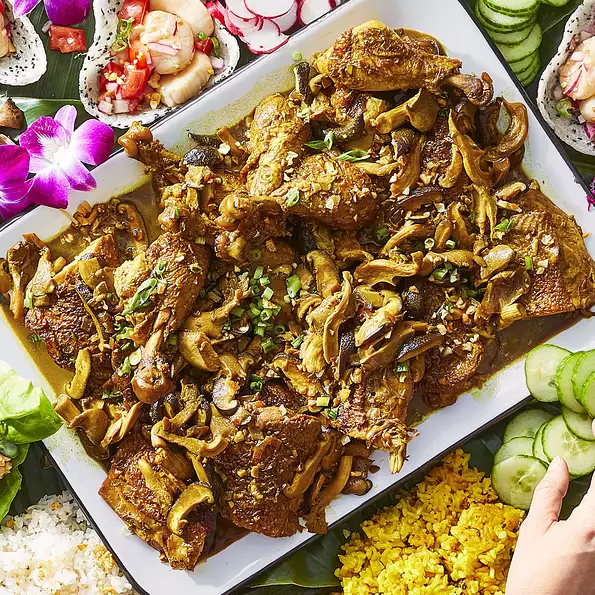

Chicken Adobo with Coconut Milk

In the Philippines, adobo is both a beloved cooking technique and a tangy marinated and braised meat dish. It's akin to the French coq au vin, but with a flavor all its own. You can use different types of meat or fish, but chicken is a favorite. Serve with steamed or fried rice.
Ingredients
- 1 1/2 cups spiced cane vinegar
- 1 1/2 cups soy sauce
- 3/4 cub brewed coffee
- 1/2 cup packed dark brown sugar
- 2 tablespoons coconut oil
- 8 medium (blank)s chicken leg quarters
- 1 tablespoon coarsely chopped garlic
- 1/3 cup minced shallots
- 1/4 cup minced garlic
- 3 tablespoons whole black peppercorns
- 6 each bay leaves
- cheesecloth and kitchen string
- 1/2 pound fresh shiitake mushrooms, stems removed and caps thinly sliced
- pound oyster mushrooms, sliced
- 1 1/2 cups coconut cream
- 2 tablespoons ground turmeric
- 2 medium (4-1/8" long)s green onions, chopped
back to home